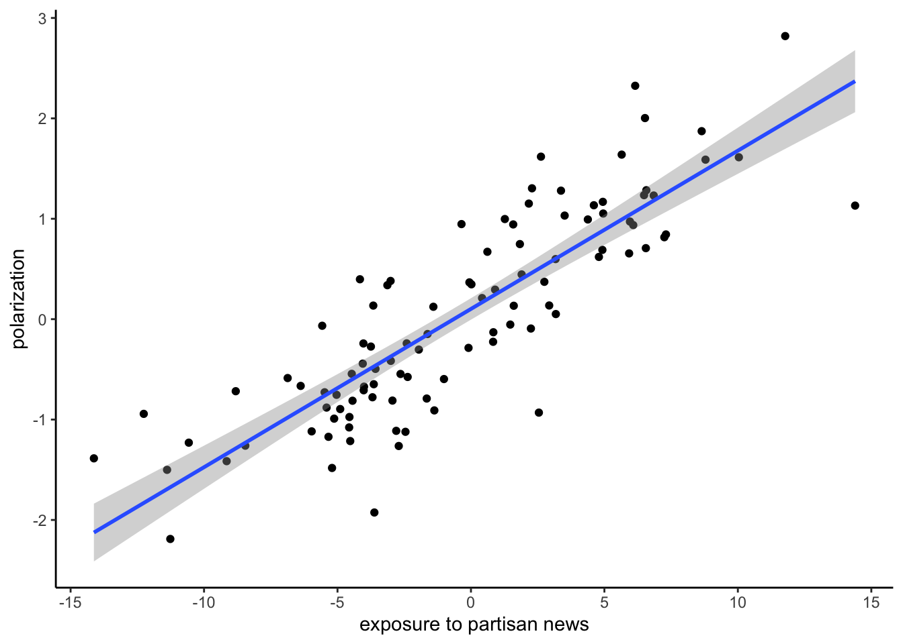

This is a data analysis seminar focused on the application of linear regression analysis to explore questions about mediated and moderated effects.
Computer applications will focus on R statistical language and the Rstudio environment (https://www.rstudio.com) and the PROCESS software by Andrew F. Hayes (http://processmacro.org).
The course is subdivided in 5 learning units.
The introductory part of the course will be dedicated to installing the data science tools R and Rstudio (https://www.rstudio.com) and to learning the basic principles necessary to work on statistical analysis with this software. Students will be required to acquire a basic familiarity with the Rstudio interface and R programming in a short period of time, in order to be able to use it for performing statistical analysis. At home study and exercise will be fundamental to reaching the objective.
The second part of the course will be dedicated to presenting the principles of linear regression analysis, and explaining how to fit, visualize, interpret, and evaluate regression models in R.
We’ll use linear regression models to answer questions of the WHETHER or IF variety. These are questions about association between variables. For example, is there a relationship between a variable Y, and another variable X, and possibly other ones? For example, we can use this kind of analysis to study whether polarization increases as the exposure to partisan news media increases.
y <-rnorm(100)x <- y *5+rnorm(100, sd=3)df <-data.frame(x=x, y=y)ggplot(data=df, aes(x,y)) +geom_point(aes(x,y)) +geom_smooth(method='lm', formula= y~x) +labs(y ="polarization", x ="exposure to partisan news") +theme_classic()

The third unit will be dedicated to **mediation analysis**, and explaining how to fit, visualize, interpret, and evaluate mediation models using PROCESS in the R environment.
Mediation analysis answers questions of the **HOW** variety, and it is used to study the mechanism(s) by which one variable impacts another one.
Loading required package: DiagrammeR
For example, let’s say that we have established a relationship between the use of violent video games and the frequency of off-line assaults. The next step may be to use mediation analysis to analyze the potential mechanism by which violent video games impact offline aggressive behavior.
**UNIT 4**: The fourth learning unit will be dedicated to **moderation analysis**, and explaining how to fit, visualize, interpret, and evaluate moderation models using PROCESS in the R environment.
Moderation analysis is used to answer questions of the **WHEN** variety, that is to say, to study the conditions or contingencies of an association.
grViz("digraph {width = 500height = 500 graph [layout = dot, rankdir = LR, label = Moderation] node [shape = rectangle] x [label = 'X'] y [label = 'Y'] w [label = 'W'] node [shape=none, width=0, height=0, label=''] p1 -> y; {rank=same; w -> p1} edge [dir=none] x -> p1 }")
For example, there is no reason to think that the association between violent video games and offline aggression is universal. Maybe, it is stronger for males than females, or the strength of the association is a function of personality traits. We use moderation analysis to answer these questions.
grViz("digraph {width = 500height = 500 graph [layout = dot, rankdir = LR] node [shape = rectangle] x [label = 'Violent video games'] y [label = 'Offline aggressions'] w [label = 'Sex?\nAge?\nPersonality?'] node [shape=none, width=0, height=0, label=''] p1 -> y; {rank=same; w -> p1} edge [dir=none] x -> p1 }")
**UNIT 5**: The fifth learning unit will be dedicated to **conditional process analysis**, and explaining how to fit, visualize, interpret, and evaluate conditional process models using PROCESS in the R environment.
Conditional process represents the conditions of mechanisms by which a variable impact on another one. It includes both mediation and moderation analysis.
grViz("digraph {width = 500height = 500 graph [layout = dot, rankdir = LR, label = 'Conditional process'] node [shape = rectangle] x [label = 'X'] y [label = 'Y'] m [label = 'M'] w [label = 'W'] node [shape=none, width=0, height=0, label=''] p1 -> m p2 -> y; {rank=same; w -> p1 w -> p2} # edge definitions with the node IDs x -> y m -> y; edge [dir=none] x -> p1 x -> p2 }")
Conditional process models allow to address the complexity of social science phenomena.
grViz("digraph {width = 500height = 500 graph [layout = dot, rankdir = LR] node [shape = rectangle] x [label = 'X'] y [label = 'Y'] m [label = 'Desensitize to pain?\nNormalize violence?\n...'] w [label = 'Sex?\nAge?\nPersonality?'] node [shape=none, width=0, height=0, label=''] p1 -> m p2 -> y; {rank=same; w -> p1 w -> p2} # edge definitions with the node IDs x -> y m -> y; edge [dir=none] x -> p1 x -> p2 }")
Learning Outcomes
By the end of this course, participants will be able to:
Run and interpret the results of linear regression, moderation, mediation, and conditional process models.
Know how to test competing theories of mechanisms statistically through the comparison of indirect effects in models with multiple mediators.
Know how to visualize and probe interactions in regression models in order to interpret interaction effects in the appropriate ways.
Know how to estimate the contingencies of mechanisms through the computation and inference about conditional indirect effects.
Know how to R language and PROCESS to run, visualize, and understand linear regression, moderation, mediation, and conditional process models.
Assessment
The assessment includes two online quizzes to assess the understanding of key concepts. The results of each questionnaire will constitute 50% of the final grade.
The evaluation also includes a final data analysis project to be conducted in small groups during the course. This constitutes a total of 50% of the final grade.
Attendance is mandatory and participation positively evaluated.
Handbook
The official handbook of the course is:
Andrew F. Hayes. Introduction to Mediation, Moderation, and Conditional Process Analysis. A Regression-Based Approach. 2018. SECOND EDITION. THE GUILFORD PRESS, New York, London